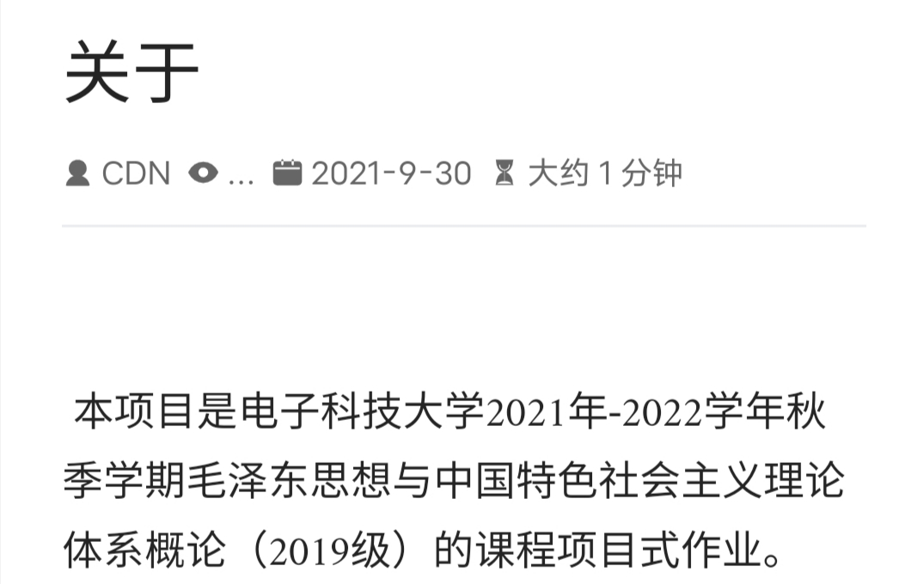

此帖子已被社区举报，现已被临时隐藏。
這些和大陸老左的各種重複勞動且毫無意義圈地自萌文庫有什麼區別嗎？他們收錄的詩詞甚至不如古詩文網客觀、中立、全面，至少古詩文網是有《七絕·炮打司令部》的，是否有這首詩是檢驗一個毛澤東詩詞庫是否革命的標準。
它與《毛澤東全集》比起來只是小巫見大巫。
《毛澤東全集》：
只有《七律·有所思》而沒有 《七絕·炮打司令部》是江澤民法西斯主義集團常見的惡毒做法，我還是堅持百度推薦的古詩文網，那裡馬列毛主義者佔據統治地位。
同時也對葉顯林、公木等毛澤東詩詞編輯出售者給以嚴厲譴責！《七絕·炮打司令部》又不是非法的，這些書籍的共同之處就是它們無情地反對毛澤東主席親自發動和引導的無產階級文化大革命。否認“武裝奪取政權，戰爭解決問題。”

1 个赞
发一个特色作业到这里，你是什么居心！